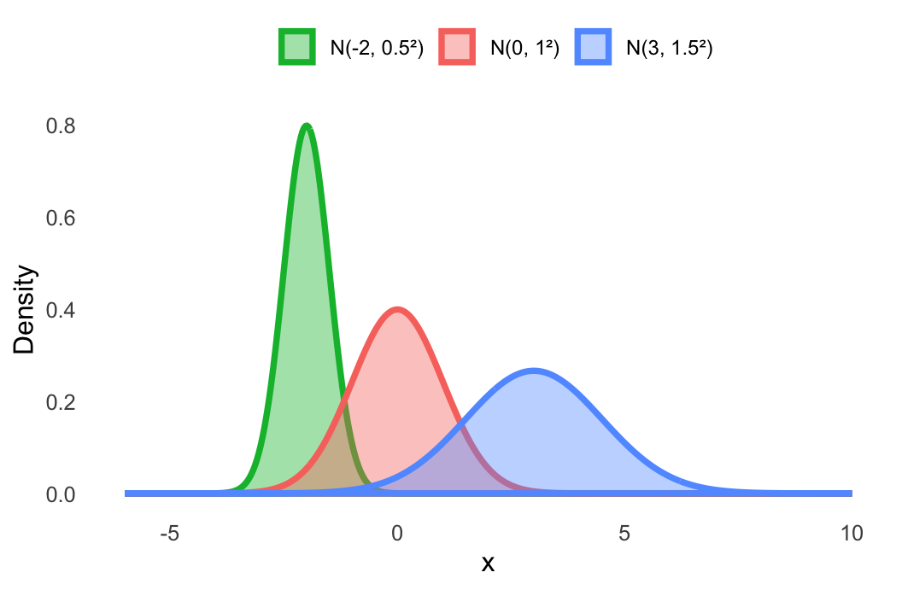
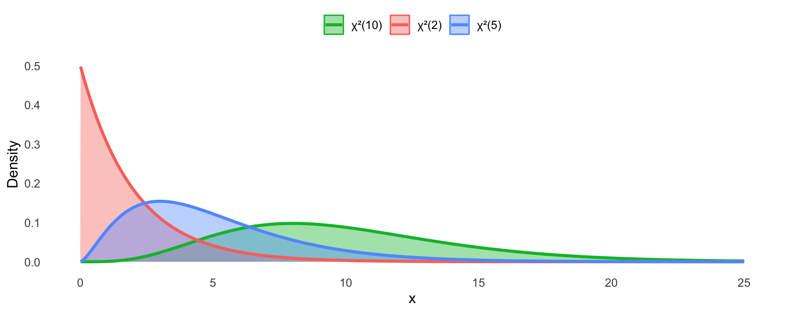
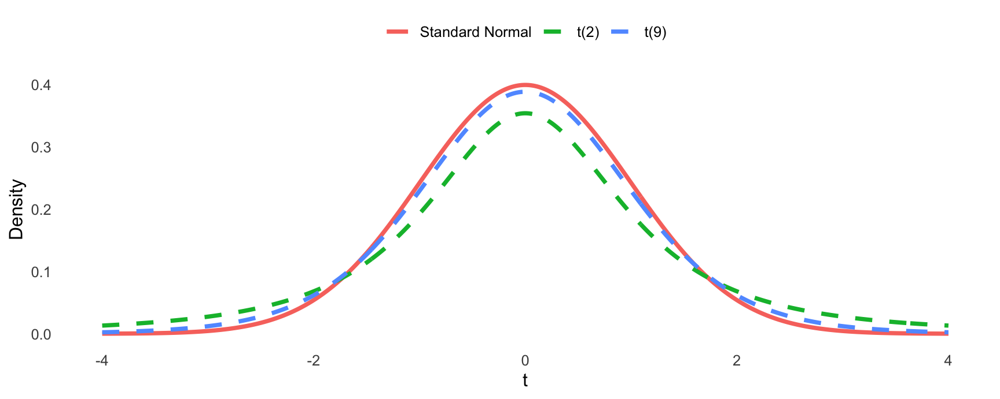
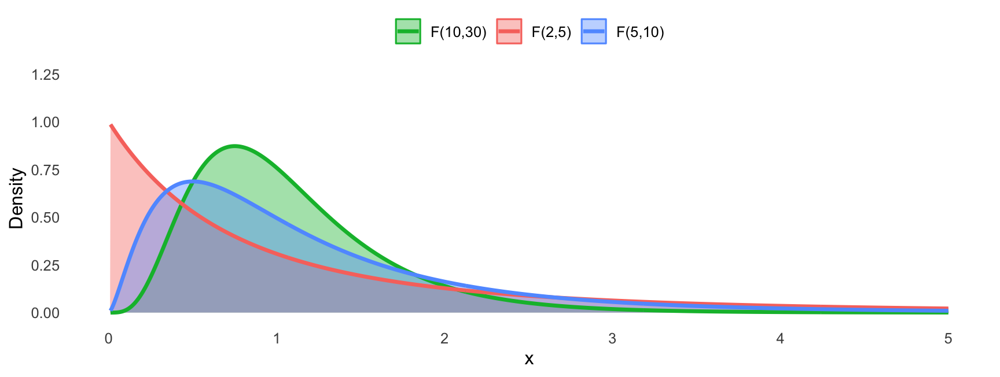

Chapter 4: Foundations of Inference
STA258: Statistics with Applied Probability University of Toronto Mississauga

Chapter Roadmap
1 - Key Distributions Normal, Chi-square, Student’s \(t\), and \(F\). Shape, parameters, and when each appears.
2 - Sampling Distributions Statistics have distributions too. The CLT explains why the sample mean is (approximately) normal for large \(n\).
3 - Law of Large Numbers Sample averages converge to the true mean. The mathematical bridge from data to probability.
Core skill Identify which distribution applies and read probability from it.
Core tool R functions pnorm(), qnorm(), pchisq(), pt(), pf().
Core habit Check the degrees of freedom before looking up any critical value.
What is Statistical Inference?
Statistical Inference
The aim is to produce estimators of population parameters based on a smaller sample, and to quantify the accuracy of those estimators via a probability statement.
We collect data from a sample → compute statistics → make statements about the population.
Classic inferential question
“How sure are we that the sample mean \(\bar{x}\) is close to the true population mean \(\mu\)?”
Why not measure everyone?
Populations are usually infinite, very large, or expensive to enumerate. Sampling + inference is the practical solution.
4.1 The Normal Distribution
Normal Distribution — \(X \sim N(\mu, \sigma^2)\)
\[f(x) = \frac{1}{\sqrt{2\pi\sigma^2}} \cdot \exp\!\left(-\frac{(x-\mu)^2}{2\sigma^2}\right)\]
for \(-\infty < x < \infty\).
Parameters: mean \(\mu\) and variance \(\sigma^2 > 0\).
Also called the Gaussian distribution, after Carl Friedrich Gauss (1809). It is symmetric and bell-shaped, completely characterized by \(\mu\) and \(\sigma\).
4.1.1 The Standard Normal Distribution
Standard Normal — \(Z \sim N(0, 1)\)
\[f(z) = \frac{1}{\sqrt{2\pi}} \cdot e^{-z^2/2}\]
A special case with \(\mu = 0\) and \(\sigma^2 = 1\). Denoted \(Z\).
Standardising. Any \(X \sim N(\mu, \sigma^2)\) can be converted:
\[Z = \frac{X - \mu}{\sigma} \sim N(0,1)\]
This lets us use a single table (or pnorm()) for any normal distribution.
The Empirical Rule
Empirical Rule (68–95–99.7)
For any \(N(\mu, \sigma^2)\) distribution:
| Interval | Probability |
|---|---|
| \((\mu - \sigma,\ \mu + \sigma)\) | \(\approx 68.27\%\) |
| \((\mu - 2\sigma,\ \mu + 2\sigma)\) | \(\approx 95.45\%\) |
| \((\mu - 3\sigma,\ \mu + 3\sigma)\) | \(\approx 99.73\%\) |
Quick SD estimate. For a roughly normal sample, \(\hat{\sigma} \approx \dfrac{\text{Range}}{4}\). Useful as a sanity check.
Empirical Rule — Interactive Explorer
Normal Probabilities in R
pnorm(q, mean, sd) gives \(P(X \le q)\).
qnorm(p, mean, sd) inverts: gives \(q\) such that \(P(X \le q) = p\).
Default: mean = 0, sd = 1 (standard normal).
Try it. What is \(P(X < 130)\) when \(X \sim N(100, 15^2)\)? Use pnorm(130, mean = 100, sd = 15).
Example: Heights
Example Adult heights in a population follow \(X \sim N(170, 8^2)\) cm.
(a) Find \(P(X < 180)\).
(b) Find \(P(X > 160)\).
(c) Find \(P(162 < X < 178)\).
(d) Find the height \(h\) such that only 5% of people are taller than \(h\).
Heights — Check in R
Example
For \(Z \sim N(0,1)\), the Empirical Rule tells us \(P(-2 < Z < 2) \approx 0.9545\). Using symmetry, what is \(P(Z > 2)\)?
- 0.9545
- 0.0455
- 0.02275
- 0.0500
Example
\(X \sim N(50, 100)\). What is the standardised value \(z\) corresponding to \(x = 65\)?
- \(z = 0.65\)
- \(z = 1.5\)
- \(z = 1.5\)
- \(z = 2.5\)
Remember: \(\sigma = \sqrt{\sigma^2}\)
4.1.2 The Chi-Square Distribution
Chi-Square Random Variable — \(X \sim \chi^2_k\)
If \(Z_1, Z_2, \ldots, Z_k \overset{\text{iid}}{\sim} N(0,1)\), then
\[X = \sum_{i=1}^{k} Z_i^2 \sim \chi^2_k\]
The pdf for \(x > 0\) is:
\[f(x; k) = \frac{1}{2^{k/2}\,\Gamma(k/2)}\, x^{k/2 - 1}\, e^{-x/2}\]
The distribution is right-skewed and supported on \((0, \infty)\). As \(k\) increases, it becomes more symmetric. \(E[X] = k\), \(\text{Var}(X) = 2k\).
Chi-Square: Shape by Degrees of Freedom

Key fact. The chi-square distribution is always positive and right-skewed. It plays a central role in tests for variance and for categorical data (Chapter 7+).
Chi-Square in R
Mean & Variance
For \(X \sim \chi^2_k\):
\[E[X] = k, \qquad \text{Var}(X) = 2k\]
As \(k \to \infty\), the chi-square distribution approaches a normal distribution (by the CLT).
Example: Chi-Square Probability
Example Let \(X \sim \chi^2_{8}\).
(a) Find \(P(X \leq 15.507)\).
(b) Find the 95th percentile of \(X\).
(c) If \(Z_1, Z_2, Z_3 \overset{\text{iid}}{\sim} N(0,1)\), what is the distribution of \(Z_1^2 + Z_2^2 + Z_3^2\)?
(d) What are \(E[X]\) and \(\text{Var}(X)\)?
Chi-Square Example — Check in R
Example
\(Z_1, Z_2, Z_3, Z_4 \overset{\text{iid}}{\sim} N(0,1)\). What is the distribution of \(W = Z_1^2 + Z_2^2 + Z_3^2 + Z_4^2\)?
- \(W \sim N(0,4)\)
- \(W \sim \chi^2_2\)
- \(W \sim \chi^2_4\)
- \(W \sim t_4\)
4.1.3 The Student’s \(t\)-Distribution
Student’s \(t\) Distribution — \(T \sim t_\nu\)
If \(Z \sim N(0,1)\) and \(U \sim \chi^2_\nu\) are independent, then
\[T = \frac{Z}{\sqrt{U/\nu}} \sim t_\nu\]
The pdf is:
\[f_T(t;\nu) = \frac{\Gamma\!\left(\frac{\nu+1}{2}\right)}{\sqrt{\pi\nu}\,\Gamma\!\left(\frac{\nu}{2}\right)} \left(1 + \frac{t^2}{\nu}\right)^{-\frac{\nu+1}{2}}, \quad -\infty < t < \infty\]
The \(t\)-distribution has heavier tails than the normal. As \(\nu \to \infty\), \(t_\nu \to N(0,1)\).
\(t\) vs Normal: Heavier Tails

Why does this matter? When estimating a mean from a small sample with unknown \(\sigma\), we use \(t\) critical values — they are larger than \(z\) values, reflecting extra uncertainty.
\(t\)-Distribution: Interactive Tail Comparison
\(t\)-Distribution in R
pt(q, df) → \(P(T \le q)\)
qt(p, df) → inverse CDF
Notice qt(0.975, df=10) = 2.228 vs qnorm(0.975) = 1.960. The \(t\) critical value is larger — reflecting extra uncertainty in small samples.
Example: \(t\) Critical Values
Example (a) For \(T \sim t_{15}\), find \(P(T \leq 2.131)\).
(b) For \(T \sim t_{20}\), find the value \(c\) such that \(P(-c \leq T \leq c) = 0.95\).
(c) For \(T \sim t_{5}\), find \(P(|T| > 2.571)\).
(d) Compare the 97.5th percentile of \(t_{5}\), \(t_{30}\), and \(N(0,1)\). What do you notice?
\(t\) Example — Check in R
Example
Why do we use the \(t\)-distribution instead of the normal when making inferences about a mean from a small sample?
- The \(t\) is easier to compute
- We must estimate \(\sigma\) from the data, adding uncertainty — \(t\) has heavier tails to account for this
- The normal distribution is only valid for large populations
- Small samples always have skewed data
4.1.4 The \(F\)-Distribution
\(F\) Random Variable — \(F \sim F_{\nu_1, \nu_2}\)
If \(U \sim \chi^2_{\nu_1}\) and \(V \sim \chi^2_{\nu_2}\) are independent, then
\[F = \frac{U/\nu_1}{V/\nu_2} \sim F_{\nu_1, \nu_2}\]
The \(F\) distribution is supported on \((0, \infty)\) and characterised by two degrees of freedom: numerator \(\nu_1\) and denominator \(\nu_2\).
The \(F\) distribution is used to compare two variances and is the backbone of ANOVA (Analysis of Variance). You will see it a lot in later chapters.
\(F\)-Distribution: Shape

\(F\)-Distribution in R
Example
Which statement correctly describes the relationship between the \(\chi^2\) and \(F\) distributions?
- \(F\) is the square of a \(\chi^2\) random variable
- \(F\) is the ratio of two independent \(\chi^2\) variables, each divided by its degrees of freedom
- \(F\) is the sum of two \(\chi^2\) random variables
- \(F\) is always symmetric like the normal
Distribution Summary Table
| Distribution | Parameters | Support | \(E[X]\) | Key use |
|---|---|---|---|---|
| \(N(\mu,\sigma^2)\) | \(\mu, \sigma^2\) | \(\mathbb{R}\) | \(\mu\) | General continuous |
| \(\chi^2_k\) | \(k\) (df) | \((0,\infty)\) | \(k\) | Variance tests |
| \(t_\nu\) | \(\nu\) (df) | \(\mathbb{R}\) | \(0\) | Small-sample mean |
| \(F_{\nu_1,\nu_2}\) | \(\nu_1, \nu_2\) | \((0,\infty)\) | \(\dfrac{\nu_2}{\nu_2-2}\) | Variance ratios |
Connections. \(Z^2 \sim \chi^2_1\); \(\;\) \(t_\nu^2 \sim F_{1,\nu}\); \(\;\) \(t_\nu \to N(0,1)\) and \(\chi^2_k/k \to 1\) as degrees of freedom grow.
Built-in Distribution Calculator
Quick reference
| Dist | CDF | Quantile |
|---|---|---|
| Normal | pnorm |
qnorm |
| \(\chi^2\) | pchisq |
qchisq |
| \(t\) | pt |
qt |
| \(F\) | pf |
qf |
All accept lower.tail = FALSE for upper-tail probabilities.
4.2 Sampling Distributions
Sampling Distribution
The probability distribution of a statistic (such as \(\bar{X}\)) computed from all possible random samples of a given size \(n\) drawn from the same population.
Key idea. \(\bar{X}\) is not a fixed number — it is a random variable. Each new sample of size \(n\) gives a different value of \(\bar{X}\). The sampling distribution describes how those values vary.
Why it matters. Understanding the variability of \(\bar{X}\) from sample to sample is the foundation for confidence intervals and hypothesis tests.
Sampling Distribution of \(\bar{X}\)
Distribution of the sample mean
If \(X_1, \ldots, X_n \overset{\text{iid}}{\sim}\) population with mean \(\mu\) and variance \(\sigma^2\), then:
\[E[\bar{X}] = \mu \qquad \text{Var}(\bar{X}) = \frac{\sigma^2}{n}\]
The standard error of \(\bar{X}\) is \(\text{SE}(\bar{X}) = \dfrac{\sigma}{\sqrt{n}}\).
Larger \(n\) → smaller SE. Collecting more data shrinks the variability of the sample mean. This is why bigger samples give more precise estimates.
Sampling Distribution — Simulation
Change n to 5 or 2 and re-run. Watch the distribution become less normal.
Example
A population has mean \(\mu = 40\) and variance \(\sigma^2 = 100\). A random sample of size \(n = 25\) is drawn. What is the standard error of \(\bar{X}\)?
- 10
- 4
- 2
- 0.4
4.3 The Central Limit Theorem
Central Limit Theorem (CLT)
Let \(X_1, X_2, \ldots, X_n\) be i.i.d. with \(E[X_i] = \mu\) and \(\text{Var}(X_i) = \sigma^2 < \infty\). Then as \(n \to \infty\):
\[\frac{\sqrt{n}(\bar{X}_n - \mu)}{\sigma} \;\overset{d}{\longrightarrow}\; N(0,1)\]
Equivalently, for large \(n\): \(\quad \bar{X}_n \;\dot{\sim}\; N\!\left(\mu,\, \frac{\sigma^2}{n}\right)\)
Remarkable. The CLT holds for any parent distribution with finite variance — uniform, exponential, Poisson, or anything else. The shape of \(\bar{X}\) approaches normal as \(n\) grows.
CLT: What “Large \(n\)” Means in Practice
Symmetric distributions Even \(n = 10\)–\(15\) is often enough. The normal approximation kicks in quickly.
Moderately skewed \(n = 30\) is a common rule of thumb. Check with a histogram.
Heavily skewed May need \(n = 50\)–\(100\) or more. The more extreme the skew, the larger \(n\) must be.
Practical consequence. For large \(n\), we can use \(z\)-based confidence intervals and hypothesis tests for \(\mu\) even when the parent distribution is unknown or skewed.
CLT — Interactive Simulator
CLT Example: Poisson Sums
Example Customers arrive at a bank at rate \(\lambda = 4\) per minute. \(X_i \sim \text{Pois}(4)\).
(a) What are \(E[X_i]\) and \(\text{Var}(X_i)\)?
(b) For a sample of \(n = 36\) one-minute intervals, find \(P(\bar{X} \leq 4.5)\) approximately.
(c) Find \(P(\bar{X} > 3.8)\) approximately.
(d) What sample size \(n\) would make \(P(|\bar{X} - 4| < 0.25) \geq 0.95\)?
Poisson CLT — Check in R
Example
The Central Limit Theorem says the sample mean \(\bar{X}_n\) is approximately normal for large \(n\). What conditions are required?
- The population must be normal
- The sample size must equal exactly 30
- The observations must be i.i.d. with finite mean and variance
- The population must be symmetric
4.4 Convergence in Probability
Convergence in Probability
A sequence \(X_1, X_2, \ldots\) converges in probability to constant \(c\) if for every \(\varepsilon > 0\):
\[\lim_{n\to\infty} P\!\left(|X_n - c| \leq \varepsilon\right) = 1\]
Written \(X_n \overset{p}{\longrightarrow} c\).
Intuition. As \(n\) grows, the probability that \(X_n\) is far from \(c\) shrinks to zero. The sequence settles down near \(c\).
Chebyshev’s Inequality
Chebyshev’s Inequality
For any random variable \(X\) with mean \(\mu\) and variance \(\sigma^2\), and any \(k > 0\):
\[P(|X - \mu| \geq k) \leq \frac{\sigma^2}{k^2}\]
Equivalently: \(P(|X - \mu| < k) \geq 1 - \dfrac{\sigma^2}{k^2}\)
No distributional assumption. Chebyshev’s inequality holds for any distribution with finite variance. It is the key tool in proving the WLLN.
Chebyshev Example
Example \(X\) has mean \(\mu = 10\) and standard deviation \(\sigma = 3\).
(a) Use Chebyshev to bound \(P(|X - 10| \geq 9)\).
(b) Use Chebyshev to bound \(P(1 < X < 19)\) from below.
(c) Now suppose \(X\) is actually \(N(10, 9)\). Compute the exact probability \(P(1 < X < 19)\) and compare with the Chebyshev bound.
Chebyshev — Check in R
4.4.2 Weak Law of Large Numbers
Weak Law of Large Numbers (WLLN)
Let \(X_1, X_2, \ldots\) be i.i.d. with \(E[X_i] = \mu\) and \(\text{Var}(X_i) = \sigma^2 < \infty\). Then for any \(\varepsilon > 0\):
\[P\!\left(\left|\bar{X}_n - \mu\right| \geq \varepsilon\right) \longrightarrow 0 \quad \text{as } n \to \infty\]
Written \(\bar{X}_n \overset{p}{\longrightarrow} \mu\).
This does not say \(\bar{X}_n = \mu\) for large \(n\). It says the probability of being far from \(\mu\) goes to zero. Individual realisations can still deviate.
Proof Sketch: WLLN via Chebyshev
Key steps
\(\text{Var}(\bar{X}_n) = \dfrac{\sigma^2}{n}\)
Apply Chebyshev with \(k = \varepsilon\):
\[P\!\left(|\bar{X}_n - \mu| \geq \varepsilon\right) \leq \frac{\sigma^2}{n\varepsilon^2}\]
As \(n \to \infty\), right side \(\to 0\).
Since probability \(\geq 0\), conclude the limit is \(0\). \(\square\)
What does the proof need?
- Finite variance \(\sigma^2\)
- Independence (for \(\text{Var}(\bar{X}_n) = \sigma^2/n\))
- Identical distribution (for common \(\mu\) and \(\sigma^2\))
The CLT is not required — Chebyshev alone is enough.
WLLN — Simulation
WLLN — Multiple Paths
Example: Poisson WLLN
Example Let \(X_i \overset{\text{iid}}{\sim} \text{Poisson}(\lambda = 3)\) for \(i = 1, 2, \ldots\)
(a) State \(E[X_i]\) and \(\text{Var}(X_i)\).
(b) Apply Chebyshev’s inequality to bound \(P(|\bar{X}_n - 3| \geq \varepsilon)\).
(c) Show that \(\bar{X}_n \overset{p}{\longrightarrow} 3\).
(d) Simulate the convergence in R for \(n = 500\) trials.
Poisson WLLN — Check in R
Example
The Weak Law of Large Numbers guarantees that for large \(n\), \(\bar{X}_n\) is close to \(\mu\) with high probability. Which mathematical tool is used in the standard proof?
- The Central Limit Theorem
- Chebyshev’s Inequality
- Jensen’s Inequality
- The Empirical Rule
Example
A fair die is rolled repeatedly. Let \(\bar{X}_n\) be the average of the first \(n\) rolls. By the WLLN, \(\bar{X}_n\) converges in probability to which value?
- 3
- 3.5
- 4
- 6
Empirical Probability Connection
Empirical Probability from the WLLN
Define indicator \(X_i = \mathbf{1}[\text{event } A \text{ occurs on trial } i]\).
Then \(E[X_i] = P(A)\), and by the WLLN:
\[\bar{X}_n = \frac{\text{number of times } A \text{ occurs}}{n} \;\overset{p}{\longrightarrow}\; P(A)\]
Coin flip. Tossing a fair coin: \(P(\text{heads}) = 0.5\). After many flips, the proportion of heads converges to \(0.5\). This is precisely the WLLN at work.
Chapter Summary
Key Distributions \(N(\mu,\sigma^2)\) for continuous data; \(\chi^2_k\) for variance; \(t_\nu\) for small-sample means; \(F_{\nu_1,\nu_2}\) for variance ratios.
CLT For i.i.d. data with finite variance, \(\bar{X}_n\) is approximately \(N(\mu, \sigma^2/n)\) for large \(n\), regardless of the parent distribution.
LLN \(\bar{X}_n \overset{p}{\to} \mu\). Sample averages settle near the population mean. Proof uses Chebyshev’s inequality.
One slide takeaway. The CLT and LLN together justify why normal-based inference (confidence intervals, \(t\)-tests) works in practice. Learn the distributions now — everything in Chapters 5+ builds on them.
Bonus Example: Applying the CLT
Bonus Example Let \(X \sim \text{Uniform}(0, 1)\), so \(E[X] = 0.5\) and \(\text{Var}(X) = 1/12\).
(a) For \(n = 48\) i.i.d. draws, find \(P(\bar{X} \leq 0.52)\) approximately.
(b) Find \(P(0.48 \leq \bar{X} \leq 0.52)\) approximately.
(c) Simulate the sampling distribution and overlay the CLT approximation. Do they agree?
Bonus Example — Check in R
Up Next
Chapter 5 — Confidence Intervals
We use the CLT and the \(t\)-distribution to build confidence intervals for unknown population means and proportions. You will finally answer: “How sure are we that \(\bar{x}\) is close to \(\mu\)?”
STA258 | Chapter 4